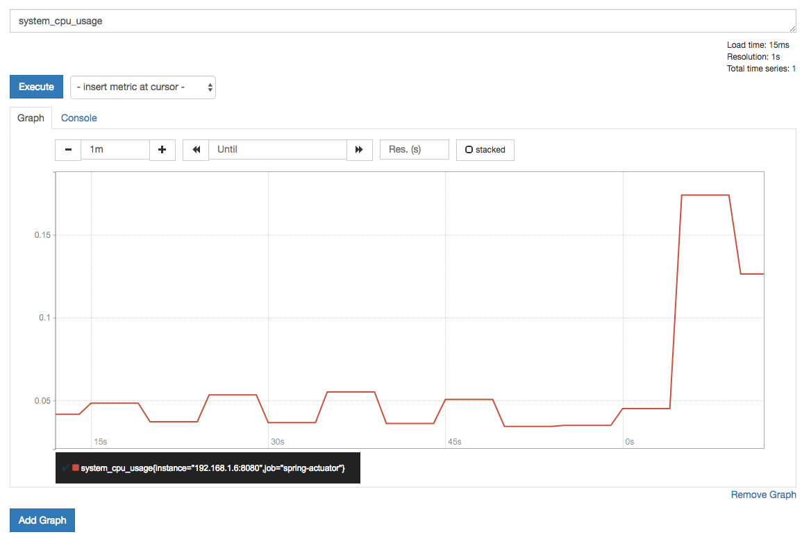
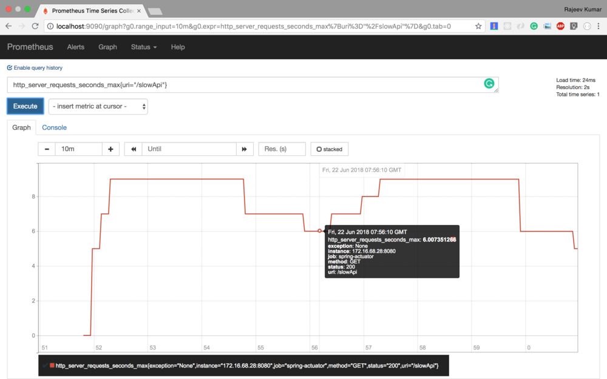
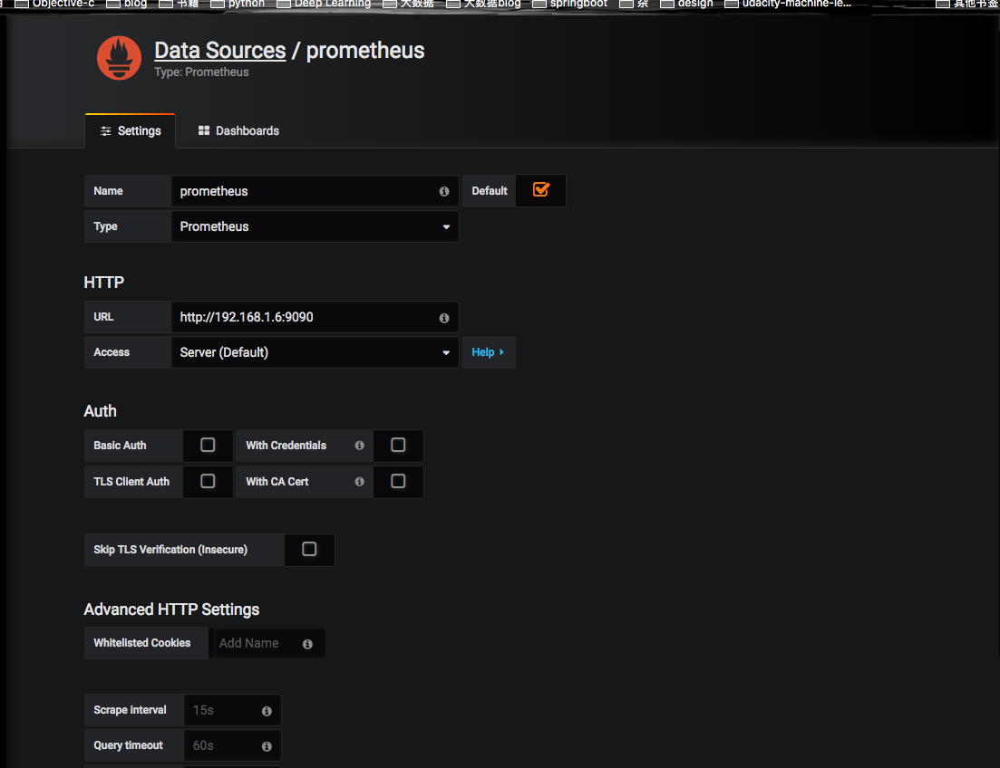
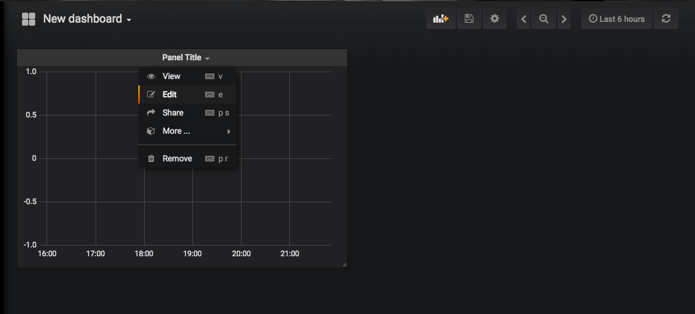
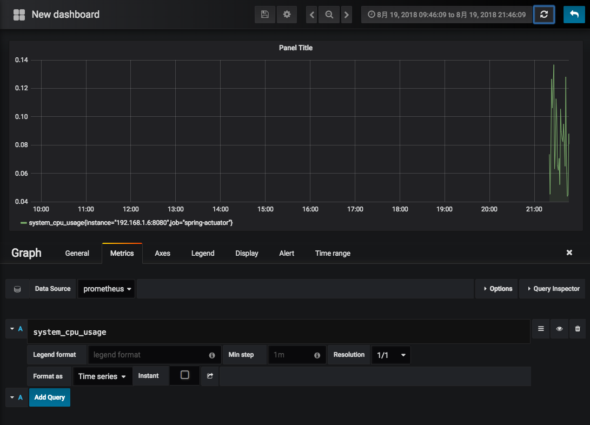
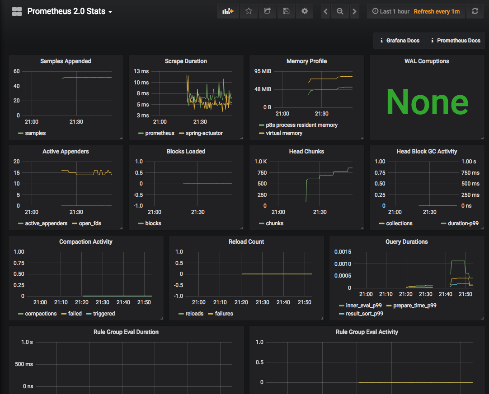

欢迎来到Spring Boot Actuator教程系列的第二部分。在第一部分中，你学习到了spring-boot-actuator模块做了什么，如何配置spring boot应用以及如何与各样的actuator endpoints交互。
在这篇文章中，你将学习sprint boot如何整合外部监控系统Prometheus和图表解决方案Grafana。
在这篇文章的末尾，你将在自己本地电脑上建立一个Prometheus和Grafana仪表盘，用来可视化监控Spring Boot应用产生的所有metrics。
Prometheus
Prometheus是一个开源的监控系统，起源于SoundCloud。它由以下几个核心组件构成：
- 数据爬虫：根据配置的时间定期的通过HTTP抓去metrics数据。
- time-series 数据库：存储所有的metrics数据。
- 简单的用户交互接口：可视化、查询和监控所有的metrics。
Grafana
Grafana使你能够把来自不同数据源比如Elasticsearch, Prometheus, Graphite, influxDB等多样的数据以绚丽的图标展示出来。
它也能基于你的metrics数据发出告警。当一个告警状态改变时，它能通知你通过email，slack或者其他途径。
值得注意的是，Prometheus仪表盘也有简单的图标。但是Grafana的图表表现的更好。这也是为什么，在这篇文章中，我们将整合Grafana和Pormetheus来可视化metrics数据。
增加Micrometer Prometheus Registry到你的Spring Boot应用
Spring Boot使用Micrometer，一个应用metrics组件，将actuator metrics整合到外部监控系统中。
它支持很多种监控系统，比如Netflix Atalas, AWS Cloudwatch, Datadog, InfluxData, SignalFx, Graphite, Wavefront和Prometheus等。
为了整合Prometheus，你需要增加micrometer-registry-prometheus依赖：
1 | <!-- Micrometer Prometheus registry --> |
一旦你增加上述的依赖，Spring Boot会自动配置一个PrometheusMeterRegistry和CollectorRegistry来收集和输出格式化的metrics数据，使得Prometheus服务器可以爬取。
所有应用的metrics数据是根据一个叫/prometheus的endpoint来设置是否可用。Prometheus服务器可以周期性的爬取这个endpoint来获取metrics数据。
解析Spring Boot Actuator的/prometheus Endpoint
首先，你可以通过actuator endpoint-discovery页面(http://localhost:8080/actuator)来看一下prometheus endpoint。
1 | "prometheus": { |
prometheus endpoint暴露了格式化的metrics数据给Prometheus服务器。你可以通过prometheus endpoint(http://localhost:8080/actuator/prometheus)看到被暴露的metrics数据:
1 | # HELP jvm_memory_committed_bytes The amount of memory in bytes that is committed for the Java virtual machine to use |
使用Docker下载和运行Prometheus
下载Prometheus
你可以使用docker pull命令来下载Prometheus docker image。
1 | docker pull prom/prometheus |
一旦这个image被下载下来，你可以使用docker image ls命令来查看本地的image列表：
1 | docker image ls |
Prometheus配置(prometheus.yml)
接下来，我们需要配置Prometheus来抓取Spring Boot Actuator的/prometheus endpoint中的metrics数据。
创建一个prometheus.yml的文件，填入以下内容：
1 | # my global config |
在Prometheus文档中，上面的配置文件是basic configuration file的扩展。
上面中比较重要的配置项是spring-actuator job中的scrape_configs选项。
metrics_path是Actuator中prometheus endpoint中的路径。targes包含了Spring Boot应用的HOST和PORT。
请确保替换HOST_IP为你Spring Boot应用运行的电脑的IP地址。值得注意的是，localhost将不起作用，因为我们将从docker container中连接HOST机器。你必须设置网络IP地址。
使用Docker运行Prometheus
最后，让我们在Docker中运行Prometheus。使用以下命令来启动一个Prometheus服务器。
1 | $ docker run -d --name=prometheus -p 9090:9090 -v <PATH_TO_prometheus.yml_FILE>:/etc/prometheus/prometheus.yml prom/prometheus --config.file=/etc/prometheus/prometheus.yml |
请确保替换<PATH_TO_prometheus.yml_FILE>为你在上面创建的Prometheus配置文件的保存的路径。
在运行上述命令之后，docker将在container中启动一个Prometheus服务器。你可以通过以下命令看到所有的container：
1 | $ docker container ls |
在Prometheus仪表盘中可视化Spring Boot Metrics
你可以通过访问http://localhost:9090访问Prometheus仪表盘。你可以通过Prometheus查询表达式来查询metrics。
下面是一些例子：
系统CPU使用

API的延迟响应

你可以从Prometheus官方文档中学习更多的 Prometheus Query Expressions。
使用Docker下载和运行Grafana
使用以下命令可以使Docker下载和运行Grafana：
1 | docker run -d --name=grafana -p 3000:3000 grafana/grafana |
上述命令将在Docker Container中开启一个Grafana，并且使用3000端口在主机上提供服务。
你可以使用docker container ls来查看Docker container列表：
1 | docker container ls |
你可以访问http://localhost:3000，并且使用默认的账户名(admin)密码(admin)来登录Grafana。
配置Grafana导入Prometheus中的metrics数据
通过以下几步导入Prometheus中的metrics数据并且在Grafana上可视化。
在Grafana上增加Prometheus数据源

建立一个仪表盘图表

添加一个Prometheus查询

默认的可视化

你可以在Github上看到完整的Actutator demo应用。
阅读第一部分：Spring Boot Actuator:健康检查、审计、统计和监控。